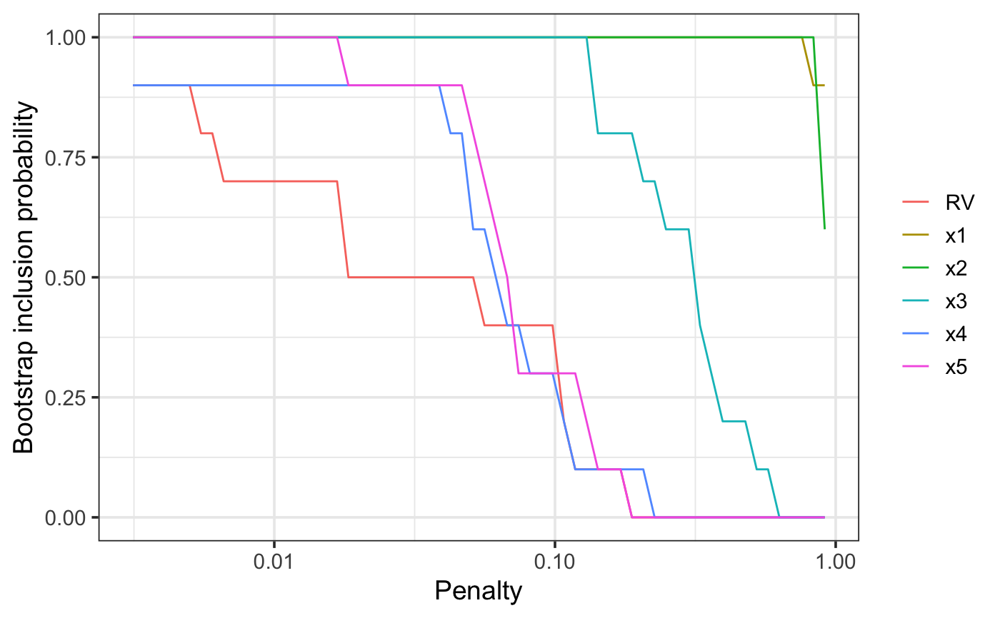

Model stability and variable importance plots for glmnet
bglmnet(
mf,
nlambda = 100,
lambda = NULL,
B = 100,
penalty.factor,
screen = FALSE,
redundant = TRUE,
cores = NULL,
force.in = NULL,
seed = NULL
)| mf | a fitted 'full' model, the result of a call to lm or glm. |
|---|---|
| nlambda | how many penalty values to consider. Default = 100. |
| lambda | manually specify the penalty values (optional). |
| B | number of bootstrap replications |
| penalty.factor | Separate penalty factors can be applied to each coefficient. This is a number that multiplies lambda to allow differential shrinkage. Can be 0 for some variables, which implies no shrinkage, and that variable is always included in the model. Default is 1 for all variables (and implicitly infinity for variables listed in exclude). Note: the penalty factors are internally rescaled to sum to nvars, and the lambda sequence will reflect this change. |
| screen | logical, whether or not to perform an initial screen for outliers. Highly experimental, use at own risk. Default = FALSE. |
| redundant | logical, whether or not to add a redundant
variable. Default = |
| cores | number of cores to be used when parallel processing the bootstrap (Not yet implemented.) |
| force.in | the names of variables that should be forced into all estimated models. (Not yet implemented.) |
| seed | random seed for reproducible results |
The result of this function is essentially just a list. The supplied plot method provides a way to visualise the results.
n = 100
set.seed(11)
e = rnorm(n)
x1 = rnorm(n)
x2 = rnorm(n)
x3 = x1^2
x4 = x2^2
x5 = x1*x2
y = 1 + x1 + x2 + e
dat = data.frame(y, x1, x2, x3, x4, x5)
lm1 = lm(y ~ ., data = dat)
# \dontshow{
bg1 = bglmnet(lm1, seed = 1, B=10)
plot(bg1)

# }
if (FALSE) {
bg1 = bglmnet(lm1, seed = 1)
# plot(bg1, which = "boot_size", interactive = TRUE)
plot(bg1, which = "boot_size", interactive = FALSE)
# plot(bg1, which = "vip", interactive = TRUE)
plot(bg1, which = "vip", interactive = FALSE)
}